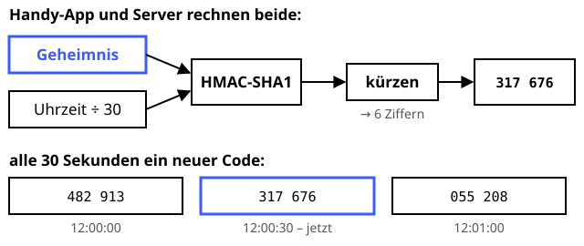

Zwei-Faktor mit TOTP
Schutzziele: Authentizität
Alle 30 Sekunden frisch aus dem Ofen.
Definition
Beim Time-based One-Time Password (RFC 6238) berechnen eine Authenticator-App und der Server aus einem gemeinsamen Geheimnis und der aktuellen Uhrzeit alle 30 Sekunden einen sechsstelligen Code. Zusätzlich zum Passwort (etwas, das man weiß) beweist der Code, dass man das Gerät besitzt – ein zweiter Faktor.
Zutaten
- Gemeinsames Geheimnis (meist per QR-Code übertragen, Base32-kodiert)
- Die aktuelle Unix-Zeit
- HMAC-SHA1
- Ungefähr gleich gehende Uhren
Zubereitung
- Der Server erzeugt ein Geheimnis und zeigt es als QR-Code an, die App scannt ihn.
- Zeitschritt berechnen:
T = floor(Unix-Zeit / 30). HMAC-SHA1(Geheimnis, T)berechnen, mit T als 8-Byte-Zahl.- Die letzten 4 Bit des HMAC geben einen Offset an. Ab dort 4 Byte lesen und das oberste Bit streichen.
Code = Zahl mod 1.000.000, mit führenden Nullen auf 6 Stellen.- Der Server rechnet dasselbe und vergleicht. Meist wird ein Zeitschritt Abweichung toleriert.
Skizze

App und Server kennen dasselbe Geheimnis (blau) und dieselbe Uhrzeit – darum kommt bei beiden derselbe Code heraus.
Skizze erstellt von Claude (KI)
Demo
Platzhalter für die Demo
Tipps
- Backup-Codes ausdrucken und sicher aufbewahren, falls das Handy verloren geht.
- TOTP schützt nicht vor Echtzeit-Phishing: Eine gefälschte Seite kann den Code sofort weiterreichen. Stärker sind Passkeys, die auf Challenge-Response mit Signaturen beruhen.
- SMS-Codes sind schwächer als TOTP, weil Angreifer per SIM-Swapping die Telefonnummer übernehmen können.
- Der Server muss das Geheimnis lesbar speichern (hashen geht hier nicht) und es deshalb besonders gut schützen, z. B. verschlüsselt.